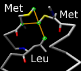

Find Clashes/Contacts


Find Clashes/Contacts identifies interatomic clashes and contacts
based on VDW radii and
user-specified criteria.
Terminology:
- clashes
- unfavorable interactions where atoms are too close together; close contacts
- contacts
- all kinds of direct interactions:
polar and nonpolar, favorable and unfavorable (including clashes)
During continuous monitoring, such interactions can be shown with
selection, coloring,
and pseudobonds.
Discontinuous monitoring additionally allows writing out information
and assigning the largest overlap per atom
as an attribute
named overlap.
See also: FindHBond,
Intersurf,
Rotamers,
Crystal Contacts
There are several ways to start
Find Clashes/Contacts, a tool in the Structure Analysis
and Surface/Binding Analysis categories.
It is also implemented as the command
findclash.
Atoms to Check are specified by
selecting atoms,
clicking Designate, and indicating which interactions should be found:
- themselves - interactions among the designated atoms
- all other atoms (default) - interactions between the designated
atoms and all other atoms
- other atoms in same model - intra-model interactions between
the designated atoms and all other atoms
- second set of designated atoms - interactions between
the designated atoms and a second designated set (specified by
selecting atoms and
clicking Designate selection as second set)
Interactions between atoms in different submodels of the same model are
ignored (note the
findclash command
has an option to include such interactions, however).
Changing the selection
will not automatically change any designated sets.
The Clash/Contact Parameters
control what will be considered a clash or contact.
The overlap
between two atoms is defined as the sum of their
VDW radii minus the
distance between them and minus an allowance
for potentially hydrogen-bonded pairs:
overlapij =
rVDWi + rVDWj
– dij – allowanceij
- Find atoms with VDW overlap >=[ cutoff ] angstroms
- pairs of atoms with overlap ≥ cutoff
will be identified.
A larger positive cutoff restricts the results to more severe
clashes, whereas a negative cutoff can also identify
favorable contacts.
- Subtract [ allowance ]
from overlap for potentially H-bonding pairs
- an allowance > 0
reflects the observation that atoms sharing a hydrogen bond can come
closer to each other than would be expected from their
VDW radii.
The allowance is only subtracted for pairs
comprised of a donor (or donor-borne hydrogen) and an acceptor.
This is equivalent to using smaller radii to characterize hydrogen-bonding
interactions (for example, see
Li
and Nussinov, Proteins 32:111 (1998)).
As in FindHBond,
possible donor groups are hydrogen-bearing nitrogen, oxygen, and sulfur atoms,
and possible acceptor groups are nitrogen, oxygen, and sulfur atoms with a
lone pair.
For detecting clashes,
cutoff values of 0.4-1.0 Å
and allowance values of 0.2-0.6 Å are
generally reasonable
(default clash criteria 0.6 and 0.4 Å, respectively).
For detecting contacts, negative
cutoff values of 0.0-(–1.0) Å
with an allowance of 0.0 Å are generally reasonable
(default contact criteria
–0.4 and 0.0 Å, respectively).
- Ignore contacts of pairs [ N ] or fewer bonds apart
(N=4 by default)
- Ignore intra-residue contacts (on by default)
Options for the Treatment of Clash/Contact Atoms:
Options for the
Frequency of Checking:
- when OK/Apply clicked (default)
- this option is compatible with all treatment options,
including attribute assignment and writing out clash/contact information.
Clicking OK runs the calculation and dismisses the dialog,
whereas clicking Apply runs the calculation without dismissing
the dialog.
- after relative motions (until dialog closed)
- whenever relative motions are paused; only selection and display
treatments are available. Relative motions
include bond rotations
and translations/rotations of one model relative to another,
as opposed to translations/rotations of all models collectively.
- continuously (until dialog closed)
- during motions; only selection and display
treatments are available
UCSF Computer Graphics Laboratory / December 2009